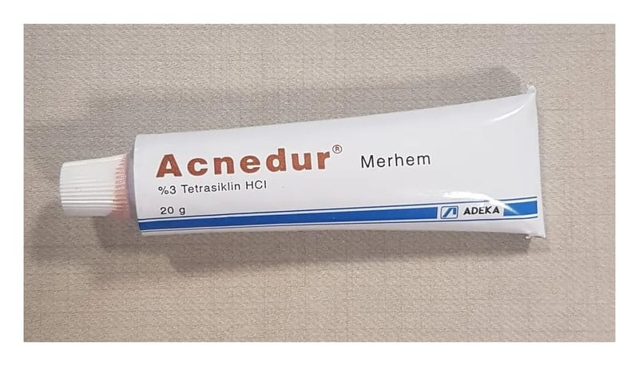

Acnedur %3 Merhem, 20 g

Ne için kullanılır
KT · Bölüm 1ACNEDUR deri üzerine uygulanan antibiyotikler sınıfına ait tıbbi bir üründür.
ACNEDUR, tetrasiklin hidroklorür adlı etken madde içermektedir. Bu madde bakterileri öldürür.
Her kutuda bir adet 20 g' lık alüminyum tüplerde kullanıma sunulmaktadır.
ACNEDUR, iltihaplı (yangılı) formları başta olmak üzere, yüzeysel akne tedavisinde ve lokal cilt infeksiyonlarında kullanılır.